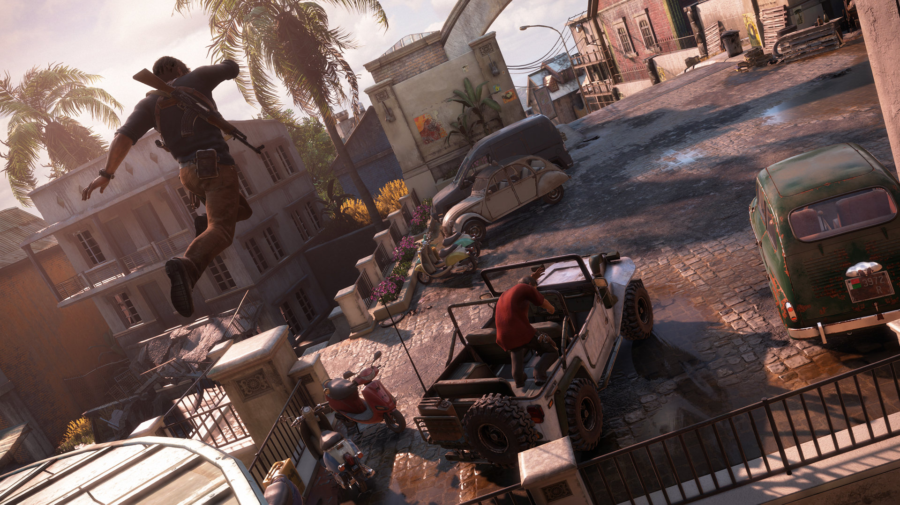

PLAYSTATION 4. No os hacemos esperar más,
aquí tenéis los mejores juegos de PlayStation 4.
20. FAR CRY 4
Desarrollador: Ubisoft Montreal
Lanzamiento: 18 de noviembre de 2014
Género: FPS/sandbox
Después del calor de Rook Island, en Far Cry 4 viajamos hasta las frías
laderas de la región de Kyrat, en el Himalaya.
El sádico tirano Pagan Min ha impuesto un reino del terror,
y alguien debe acabar con él conduciendo, disparando, cazando y
creando opiáceos. Y ese alguien... Somos nosotros.
19. FINAL FANTASY XV
Desarrollador: Square Enix
Lanzamiento: 29 de noviembre de 2016
Género: Rol
La nueva entrega de la saga J-RPG de Square Enix ha llegado a PS4
cargada de novedades y cambios en los fundamentos de la saga.
Así, nos encontramos con enorme mundo abierto para explorar y
con combates en tiempo real. La relación de amistad entre Noctis,
Gladiolus, Ignis y Prompto nos ha conquistado, así como sus sistema
de combates, la libertad de acción y los guiños a pasadas entregas
de Final Fantasy.
18. ASSASSIN'S CREED ORIGINS
Desarrollador: Ubisoft
Lanzamiento: 27 de octubre de 2017
Género: Aventura
Assassin's Creed: Origins es la prueba definitiva de que
cuando se hacen con tiempo, las cosas siempre salen bien.
Origins es mucho más que un "Assassin's Creed en Egipto", y se
desvela como uno de los mejores (sino el mejor) capítulo de la
Hermandad de Asesinos, revolucionando la base jugable a un nivel que
no se había visto desde Assassin's Creed II. Que lo momifiquen junto al resto
de faraones, porque este juego es digno del Valle de los Reyes. Os dejamos
a mano nuestro análisis de Assassin's Creed Origins.
17. NIER AUTOMATA
Desarrollador: Square-Enix
Lanzamiento: 10 de marzo de 2017
Género: Acción
Los alienígenas han invadido la Tierra y la última esperanza de la Humanidad
son 2 androides enviados a darles caña. Su arrebatadora personalidad es uno de
los puntos fuertes de un juego de acción concebido con el inconfundible estilo
de Yoko Taro, el artífice de Drakengard. Surrealismo, humor y acción "a la japonesa"
os esperan en uno de los juegos más espectaculares y carismáticos del momento.
Ya puedes leer nuestro análisis de Nier Automata.
16. PROJECT CARS
Desarrollador: Slighty Mad Studios
Lanzamiento: 7 de mayo de 2015
Género: Conducción
Los aficionados al mundo del motor y los videojuegos están de enhorabuena,
pues este año se ha puesto a la venta, tras una larga espera, el sensacional Project Cars.
Los chicos de Slightly Mad Studios nos han regalado uno de los mejores simuladores de conducción
de todos los tiempos, capaz de mirar de tú a tú a Gran Turismo.
15. NBA 2K16
Desarrollador: 2K Games
Lanzamiento: 29 de septiembre de 2015
Género: Deportes
La magistral entrega de 2015 era difícil de superar, pero con NBA 2K16 Visual
Concepts ha marcado un triple desde la otra punta del campo. Un auténtico deleite
para los fans del aro, con un control excepcional y un apartado técnico espectacular.
Se nos hace la boca agua solo de pensar en la entrega del año que viene.
14. BLOODBORNE
Desarrollador: From Software
Lanzamiento: 25 de marzo de 2015
Género: A-RPG
La muerte tiene muchas caras, pero ninguna tan atractiva como la de Bloodborne.
Hidetaka Miayazaki se puso al mando de este proyecto bestial en exclusiva
para PS4 que retomaba las bondades de la saga Souls y las ponía en práctica
en un universo completamente nuevo, que es al mismo tiempo un homenaje al horror
de Cthulhu y a la sangre. Encuentra tu valía en el mundo de la vigilía.
13. RESIDENT EVIL 7 BIOHAZARD
Desarrollador: Capcom
Lanzamiento: 24 de enero de 2017
Género: Survival horror
Resident Evil 7 Biohazard es un survival horror en primera persona,
siendo el primero de la saga principal numerada en esta perspectiva.
En el caso de la versión para PlayStation 4, se puede disfrutar del juego en realidad virtual
con PS VR. A pesar del cambio de perspectiva, Resident Evil 7 Biohazard regresa a los orígenes
de la saga. Los jugadores viven una experiencia auténtica con elementos de exploración, puzles
y atmósfera crispada; y con el clásico sistema de inventario, pero con espacio limitado, lo que
significa que los jugadores tienen que elegir muy bien lo que quieren llevar con ellos y
asegurarse de coger sus hierbas verdes.
12. DESTINY
Desarrollador: Bungie
Lanzamiento: 9 de septiembre de 2014
Género: FPS/MMO
Bungie, famosos por dar vida a la franquicia Halo, nos invitó a un viaje por
las estrellas cuyo objetivo era convertirnos en Leyenda. En el piel de un Cazador,
un Titán o un Hechicero, nos enfrentamos a alienígenas de otos mundos y a la peligrosa Oscuridad
haciendo uso de armas y magia, y conociendo a otros Guardianes,
para finalmente alcanzar la gloria de nuestro Destiny.
11. PERSONA 5
Desarrollador: Atlus
Lanzamiento: 4 de abril de 2017
Género: JRPG
Tras una larga espera de nada más y nada menos que 8 años, la saga Persona
recibe una nueva entrega que hará la delicias de los fans de los JRPGs: Persona 5.
Aunque siga la fórmula de anteriores entregas, la suma de cada uno de los apartados del juego
como el diseño artístico o el argumento resulta sobresaliente.
10. GTA V
Desarrollador: Rockstar North
Lanzamiento: 18 de noviembre de 2014
Género: Sandbox
Las remasterizaciones, cuando se hacen bien, son motivo de celebración. Y es es precisamente
el caso de GTA V, que además de mostrar un apartado gráfico muy superior a las versiones de PS3 y Xbox 360,
añadió gran cantidad de contenidos nuevos, entre los que destaca el modo en primera persona. Así no hay quien se
resista a volver a Los Santos.
9. THE LAST OF US: REMASTERIZADO
Desarrollador: Naughty Dog
Lanzamiento: 30 de julio de 2014
Género: Aventura/acción
Uno de los mejores juegos de la pasada generación es también uno de los mejores juegos de PS4.
The Last of Us: Remasterizado cuenta la odisea de Ellie y Joel en un mundo sin futuro ni esperanza
para la humanidad, con un apartado técnico puesto a punto para la ocasión,
y con el fantástico DLC Left Behind incluido.
8. BATMAN: ARKHAM KNIGHT

Desarrollador: Rocksteady
Lanzamiento: 23 de junio de 2015
Género: Aventura/acción
El Caballero Oscuro ha regresado por todo lo alto (al menos, en consolas)
con Batman: Arkham Knight, el juego que está llamado a poner punto y final
a la sensacional saga Arkham de RockSteady. El Batmóvil copa todo el protagonismo
de esta aventura cargada de emoción, huesos rotos y gas del miedo.
7. DEUS EX: MANKIND DIVIDED
Desarrollador: Eidos
Lanzamiento: 23 de agosto de 2016
Género: Aventura/acción/rol
Deus Ex: Mankind Divided une lo mejor de varios géneros en un título completísimo,
con un argumento denso y trepidante, y con un apartado visual espectacular. Puede
que no sea tan revolucionario como algunos esperaban pero el resultado final, mezcla de acción,
sigilo, hacking, decisiones, rol y aventura es tan divertido que las 40 horas
de duración del modo historia se nos han quedado cortas.
6. FALLOUT 4
Desarrollador: Bethesda
Lanzamiento: 10 de noviembre de 2015
Género: RPG
El regreso al yermo se ha hecho de rogar, pero los chicos de Bethesda no han decepcionado.
Fallout 4 lleva a PS4 toda la acción y el RPG de corte post-apocalíptico que han hecho que la saga
se ganase una auténtica legión de seguidores en el pasado, ampliando y mejorando la fórmula secreta
de la Nuka Cola por el camino. Aniquilar super mutantes a
"golpe" de Gordo nunca fue tan gratificante.
5. DARK SOULS III
Desarrollador: FromSoftware
Lanzamiento: 12 de abril de 2016
Género: RPG
Dark Souls III es el Dark Souls que se vio 4 años antes, pero perfeccionado en
todos los sentidos. Desafiante, muy gratificante y, sobre todo, sorprendente a
pesar de apoyarse sobre unos cimientos muy familiares. ¡Bendito seas, Miyazaki!
Eso sí, tened en cuenta que su dificultad puede no ser para
todo el mundo. Pero, ¿somos jugones o somos gallinas?
4. THE WITCHER 3: WILD HUNT

Desarrollador: CD Projekt RED
Lanzamiento: 19 de mayo de 2015
Género: RPG
La vida de los Brujos no es sencilla: han de dar caza a terribles criaturas para conseguir unas
pocas monedas, explorar un mundo gigantesco y descubrir todos sus secretos, completar todo
tipo de misiones con historias desgarradoras y visitar todos los burdeles de Novigra... Pensándolo
bien, la vida del Brujo no está tan mal. Pero sólo la del Brujo de The Witcher
2. METAL GEAR SOLID V: THE PHANTOM PAIN
Desarrollador: Kojima Productions
Lanzamiento: 1 de septiembre de 2015
Género: Sandbox/infiltración
Y el número dos, el "Big Boss", Metal Gear Solid V The Phantom Pain. Hideo Kojima se
despide por todo la alto con una aventura impecable en lo técnico y sublime en lo
jugable pero, sobre todo, con una carta de amor a los fans que le han acompañado
durante todo este tiempo. Puede que su historia os haya emocionado hasta haceros llorar
u os haya decepcionado enormemente, pero una cosa es indudable: MGS V debería estar
en la colección de todo jugón.
1. UNCHARTED 4 EL DESENLACE DEL LADRÓN

Desarrollador: Naughty Dog
Lanzamiento: 10 de mayo de 2016
Género: Aventura
Nathan Drake vive su última gran aventura en mejor estado de forma que nunca.
Los chicos de Naughty Dog han conseguido sorprendernos de nuevo con este Uncharted 4
El Desenlace del Ladrón demostrando que son capaces de crear el mejor juego de PS4 que podíamos
imaginar. Un “must have” en toda regla.